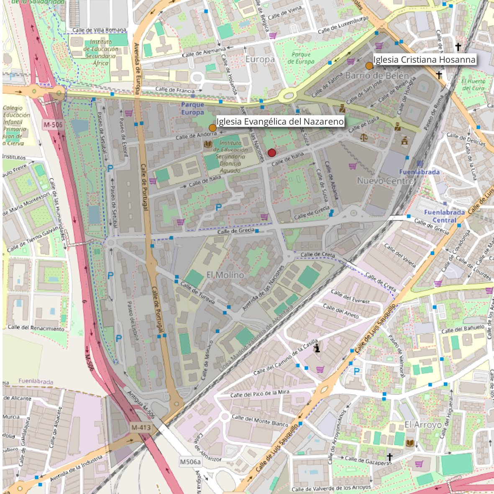
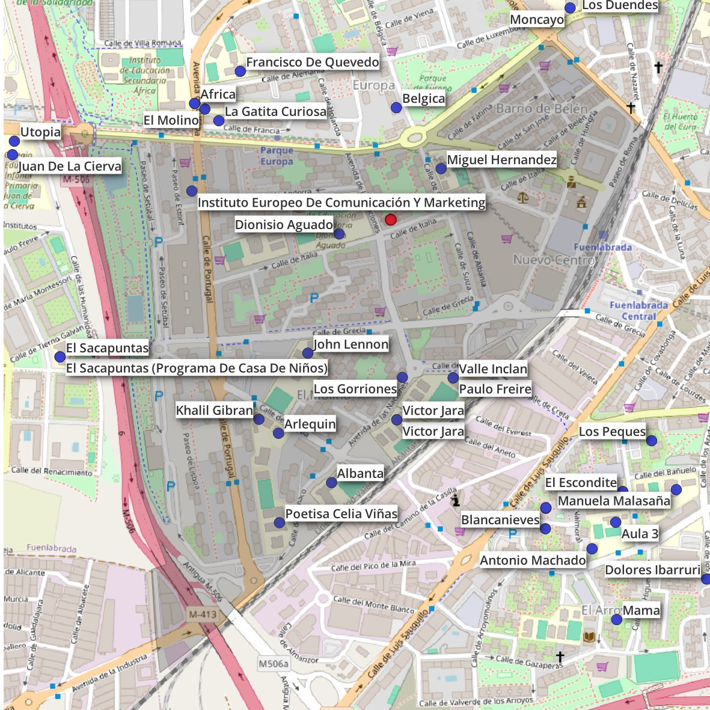

Puntos de interés en el territorio parroquial
Parroquia San José (Fuenlabrada) · Arciprestazgo de Fuenlabrada
Entidades religiosas no católicas

2 entidades religiosas no católicas en el territorio de la parroquia.
Evangélicos (2)
- Iglesia Cristiana HosannaCalle San Joaquín 8, Fuenlabrada
- Iglesia Evangélica del NazarenoPlaza de París 4 Local 6 (entrada por calle Andorra, 7), Fuenlabrada
Fuente: Registro de Entidades Religiosas del Ministerio de la Presidencia, Justicia y Relaciones con las Cortes. Situación en el mapa: dirección geocodificada con CartoCiudad (IGN) o Nominatim (OpenStreetMap).
Centros educativos

10 centros educativos en el territorio de la parroquia (público: 7, privado: 2, privado concertado: 1).
| Centro | Tipo | Titularidad | Domicilio | Web |
|---|---|---|---|---|
| ALBANTA | Centro privado de educación infantil, primaria y secundaria | Privado concertado | Calle de Mónaco, 6, 28943 Fuenlabrada | Página web |
| DIONISIO AGUADO | Instituto de educación secundaria | Público | Calle de Italia, 14, 28943 Fuenlabrada | Página web |
| INSTITUTO EUROPEO DE COMUNICACIÓN Y MARKETING | Centro privado de formación profesional específica | Privado | Calle Portugal, 37, 28943 Fuenlabrada | |
| JOHN LENNON | Colegio de educación infantil y primaria | Público | Calle de Grecia, 21, 28943 Fuenlabrada | Página web |
| KHALIL GIBRAN | Centro privado de educación infantil, primaria y secundaria | Privado | Calle de Turquía, 13, 28943 Fuenlabrada | Página web |
| LOS GORRIONES | Escuela infantil-casa de niños | Público | Calle de Creta, 2, 28943 Fuenlabrada | Página web |
| MIGUEL HERNANDEZ | Colegio de educación infantil y primaria | Público | Calle de Suiza, 24, 28943 Fuenlabrada | Página web |
| PAULO FREIRE | Centro público de educación de personas adultas | Público | Calle de Creta, 2, 28943 Fuenlabrada | Página web |
| POETISA CELIA VIÑAS | Colegio de educación infantil y primaria | Público | Calle de Mónaco, 3, 28943 Fuenlabrada | Página web |
| VICTOR JARA | Colegio de educación infantil y primaria | Público | Avenida de las Naciones, 45, 28943 Fuenlabrada | Página web |
Fuente: registro de centros educativos de la Comunidad de Madrid. Solo se recogen los centros de alta.